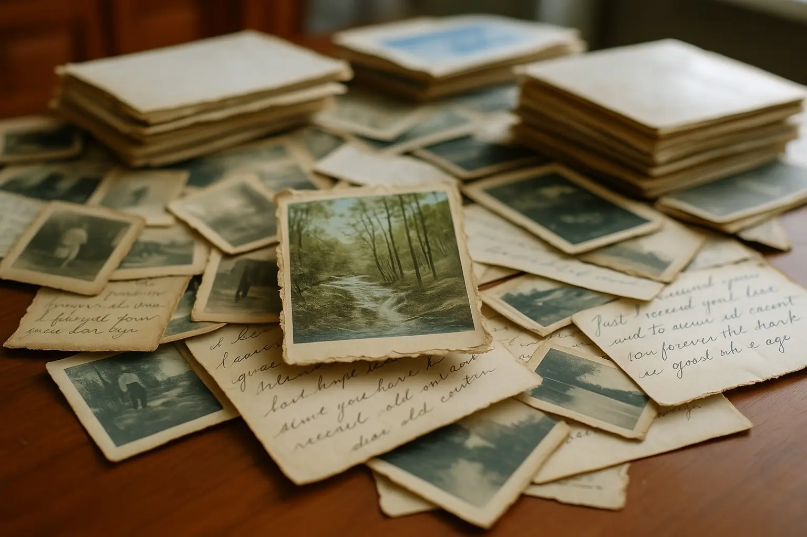
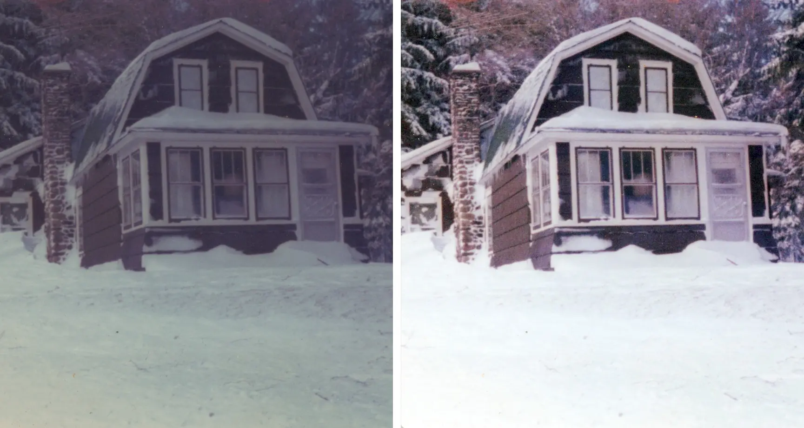

Your family photographs
Loose prints, Polaroids, and photos in albums. Photo prints are scanned at 600 DPI with an enhanced copy included.
See photo pricing →Old photos. A new way to share them.
Your family photos, personally cared for by Dan. Turn prints, 35mm slides, and negatives into digital memories you can share—with your originals returned.
A rough count is fine. Local appointments or mail-in from anywhere in the U.S.

“Dan is the best in the business. He is an expert, easy to communicate with and passionate about photography.” — Ron DePasquale, customer review
Read our customer reviews →Start with what you have
You don't need everything sorted before we talk.
Loose prints, Polaroids, and photos in albums. Photo prints are scanned at 600 DPI with an enhanced copy included.
See photo pricing →35mm slides in cardboard or plastic mounts, ready to enjoy without setting up the projector.
35mm slide scanning →35mm film-strip negatives turned into digital pictures. We don't scan 120, 110, or sheet film.
35mm negative scanning →Simple from the first conversation
Send a rough count, a photo of your boxes, or a question. We'll work out the next step together.
Schedule local drop-off or pickup. Mailing your photos? Contact Dan first for packing and project details.
Get your originals back and your scans by free private download link or an optional $20 USB drive.
A little clearer. Just as meaningful.
Automatic color, contrast, and clarity enhancement is included. You receive the scan and a second enhanced copy, so you can choose the version you prefer.
Example from our existing enhancement gallery. Results depend on the original; repairing tears or missing details is a separate project.

Clear pricing, before we begin
$50 minimum for any combination of photos, slides, and negatives.
| Photo count | Per photo |
|---|---|
| 1–1,000 | $0.20 |
| 1,001–2,000 | $0.18 |
| 2,001 or more | $0.15 |
35mm slides: $0.35 each
35mm negatives: $0.35 each
Free cloud delivery and an enhanced copy of each photo-print scan. USB delivery is $20. Polaroids and large-format prints have no extra scanning charge.
Loose photos are fastest and most affordable. Album removal or hand-scanning may add labor. Stuck photos and extra-large albums need an individual estimate. Dan confirms the cost before work begins.
A rough count is fine. You can still ask for a quote if you're unsure.
Scanning estimate only. Optional USB, album handling, pickup, and shipping are confirmed separately.
Ask Dan about this project →Let's make a start
You don't need an exact count or a perfectly organized collection. Tell me what you have, and I'll help you figure out the next step.
Text Dan a photo of your boxesCalls welcome: 716-713-6537
Prefer email? photoscanningstudio@gmail.com
Local pickup and drop-off by appointment in the Hamburg/Buffalo area. Mail-in projects welcome.
This sends your question to Dan. It does not sign you up for the email list.
Not ready to scan yet?
Get the free guide, 5 Tips to Keep Your Old Photos Alive, plus occasional photo tips and specials from Dan.
The guide is available here as soon as you sign up. Unsubscribe from emails anytime.
Your guide is ready.
Download your free photo-care guide →Care that customers remember
"You won't be sorry! First rate business. Excellent quality scanning and best value. I'll be a repeat customer for sure."
Ken Salhany
"Dan is the best in the business. He is an expert, easy to communicate with and passionate about photography. He walks you through the process and works with you step by step..."
Ron DePasquale
"Excellent service! Fast, professional, picked up and delivered. Quick turnaround. Great price. Highly recommended."
Matt Chandler
Yes. Your original photos, slides, and negatives are returned after scanning.
Most projects take 5–10 days. Timing depends on the collection; shipping adds time for mail-in projects. Tell Dan if you have a particular date in mind.
Not before we talk. Don't force stuck or fragile photos off a page. Send a picture of the album so Dan can explain the safest approach and any extra handling cost.
Free cloud delivery provides a private download link, available for about a month. Download and back up your files. A USB drive is available for $20.
Yes, by appointment at the Hamburg home studio. Text Dan to arrange a time or ask about pickup.
Serving Buffalo, Hamburg, Orchard Park, Erie County, and surrounding Western New York communities by appointment, with mail-in service nationwide.
Helpful reading & tools
See Dan's full DIY tools guide →
Amazon affiliate links. We may earn a small commission at no extra cost to you.
5309 Roberts Road
Hamburg, NY 14075
Pickup and drop-off are by appointment. Dan will confirm availability and any pickup cost before you book.
Text Dan to arrange a time →